#Load libraries
library(ggplot2); library(plyr); library(reshape2); library(limma); library(edgeR); library(RColorBrewer); library(yeast2.db); library(VennDiagram)#setwd
setwd('c:/users/blaise/desktop/assignment/')#Set common color gradient for heatmaps
jBuPuFun <- colorRampPalette(brewer.pal(n = 9, "BuPu"))
paletteSize <- 256
jBuPuPalette <- jBuPuFun(paletteSize)data <- read.delim(gzfile("NHBE_transcriptome_data.txt.gz"), stringsAsFactors = FALSE)
NHBE_design <- read.delim("NHBE_design.txt", stringsAsFactors = FALSE)dim(data)## [1] 22737 23data[1:5,1:3]## GSE10718_Biomat_1 GSE10718_Biomat_10 GSE10718_Biomat_11
## 1294_at 7.900022 7.623666 8.224398
## 1316_at 6.126008 5.846865 6.299318
## 1320_at 6.822491 7.616309 7.217153
## 1431_at 6.633596 5.698143 6.221293
## 1438_at 6.948795 7.509875 7.291645dim(NHBE_design)## [1] 23 3head(NHBE_design)## ExternalID Treatment time
## GSE10718_Biomat_1 GSM270883 control 24_h
## GSE10718_Biomat_10 GSM270874 control 1_h
## GSE10718_Biomat_11 GSM270873 control 1_h
## GSE10718_Biomat_12 GSM270872 control 1_h
## GSE10718_Biomat_13 GSM270881 control 4_h
## GSE10718_Biomat_14 GSM270880 control 4_htable(factor(NHBE_design$Treatment))##
## cigarette_smoke control
## 11 12table(NHBE_design$Treatment,NHBE_design$time)##
## 1_h 2_h 24_h 4_h
## cigarette_smoke 2 3 3 3
## control 3 3 3 3NHBE_design$time_num<-as.numeric(gsub("([0-9]*).*","\\1",NHBE_design[,3]))
#Create more informative sample IDs
all.equal(colnames(data),rownames(NHBE_design))## [1] TRUENHBE_design$Treatment[which(NHBE_design$Treatment=="cigarette_smoke")]<-"cs"
NHBE_design$Treatment[which(NHBE_design$Treatment=="control")]<-"c"
NHBE_design$ExternalID<-paste("S",substring(rownames(NHBE_design),17),NHBE_design$Treatment,NHBE_design$time_num,sep="_")
rownames(NHBE_design)<-NHBE_design$ExternalID
colnames(data)<-NHBE_design$ExternalID#Make temporary data frame for graphing
temp<-data.frame(Time=factor(NHBE_design$time_num),Treatment=factor(NHBE_design$Treatment),Exp=as.numeric(t(data[1,])))
rownames(temp)<-rownames(NHBE_design)
#Plot mean expression/group
ggplot(temp,
aes(x=Time, y=Exp, fill=Treatment))+
geom_boxplot()+
labs(x="Time (hours)",y="Expression level (log2)",title="Random probe: Expression vs time")+
theme(axis.text.x=element_text(angle=-90, vjust=0.4,hjust=1))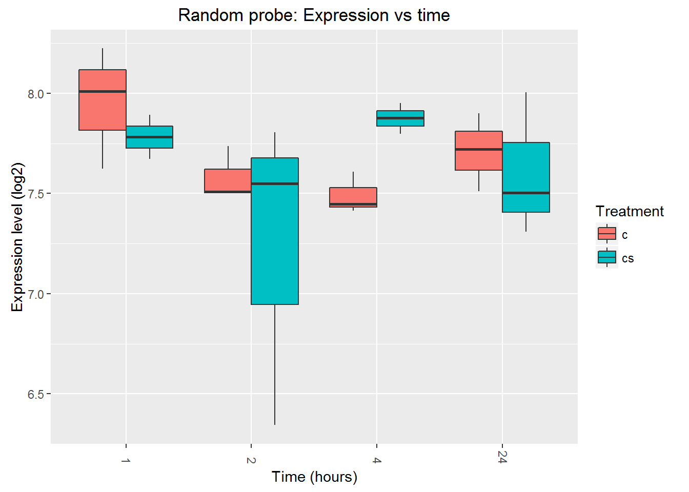
#Same as above but faceted
ggplot(temp,
aes(x=Time, y=Exp,fill=Treatment))+
geom_boxplot()+
facet_grid(.~Treatment)+
labs(x="Time (hours)",y="Expression level (log2)",title="Random probe: Expression vs time")+
theme(axis.text.x=element_text(angle=-90, vjust=0.4,hjust=1))+
theme(legend.position="none")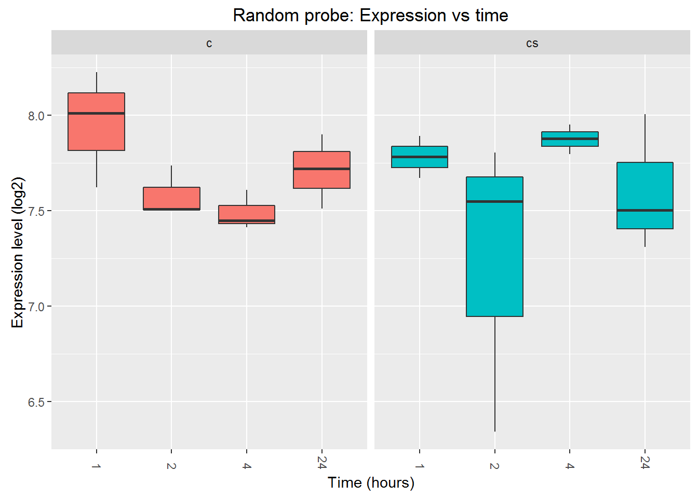
#Order temporary graphing data frame by Time(Treatment)
temp<-temp[with(temp, order(Time, Treatment)), ]
#Order intensity data frame based on order of temporary graphing data frame
data<-data[as.character(rownames(temp))]
#Check ordering was successful
all.equal(colnames(data),rownames(temp))## [1] TRUE#Plot correlation matrix heatmap Time(Treatment)
ggplot(melt(cor(data)), aes(x=Var1,y=Var2, z= value)) +
geom_tile(aes(fill= value)) +
theme_bw() +
theme(axis.text.x = element_text(angle = 90, hjust = 1)) +
labs(x="",y="",title="Sort: Time(Treatment)")+
scale_fill_gradient2(low = jBuPuPalette[1],
mid = jBuPuPalette[paletteSize/2],
high = jBuPuPalette[paletteSize],
midpoint = (max(melt(cor(data))[3]) +
min(melt(cor(data))[3])) / 2,
name = "Pearson correlation")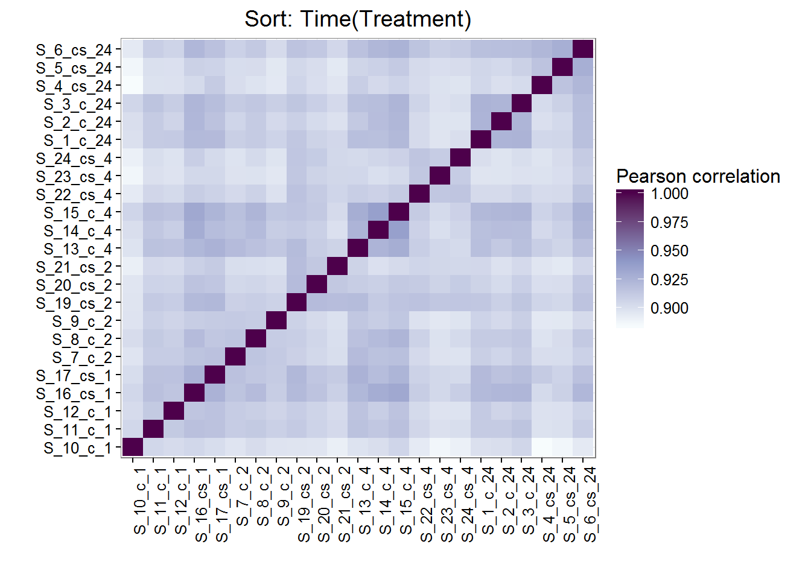
#Order temporary graphing data frame by Treatment(Time)
temp<-temp[with(temp, order(Treatment, Time)), ]
#Order intensity data frame based on order of temporary graphing data frame
data<-data[as.character(rownames(temp))]
#Check ordering was successful
all.equal(colnames(data),rownames(temp))## [1] TRUE#Plot correlation matrix heatmap Treatment(Time)
ggplot(melt(cor(data)), aes(x=Var1,y=Var2, z= value)) +
geom_tile(aes(fill= value)) +
theme_bw() +
theme(axis.text.x = element_text(angle = 90, hjust = 1))+
labs(x="",y="",title="Sort: Treatment(Time)")+
scale_fill_gradient2(low = jBuPuPalette[1],
mid = jBuPuPalette[paletteSize/2],
high = jBuPuPalette[paletteSize],
midpoint = (max(melt(cor(data))[3]) +
min(melt(cor(data))[3])) / 2,
name = "Pearson correlation")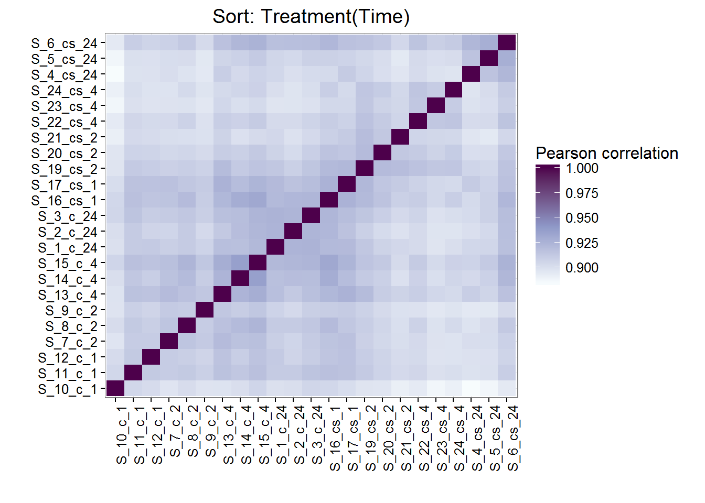
#Calculate Euclidian distance between the samples
#Temporary distance matrix
temp1<-t(data)
temp2<-as.matrix(dist(temp1, method = "euclidean"))
#Quick check of average distance for each sample
colMeans(temp2)## S_10_c_1 S_11_c_1 S_12_c_1 S_7_c_2 S_8_c_2 S_9_c_2 S_13_c_4 S_14_c_4 S_15_c_4 S_1_c_24 S_2_c_24 S_3_c_24 S_16_cs_1 S_17_cs_1 S_19_cs_2
## 170.1721 158.8795 160.8479 159.8353 157.9066 162.8904 153.0444 153.9397 150.2830 156.0071 157.7125 154.5292 151.5451 152.8652 155.0173
## S_20_cs_2 S_21_cs_2 S_22_cs_4 S_23_cs_4 S_24_cs_4 S_4_cs_24 S_5_cs_24 S_6_cs_24
## 159.3513 163.9157 160.7589 165.5442 163.7097 164.1808 163.1365 153.1396#Overall mean distance within control group
mean(colMeans(temp2[c(1:12),c(1:12)]))## [1] 148.8304#Mean distances of control samples
colMeans(temp2[c(1:12),c(1:12)])## S_10_c_1 S_11_c_1 S_12_c_1 S_7_c_2 S_8_c_2 S_9_c_2 S_13_c_4 S_14_c_4 S_15_c_4 S_1_c_24 S_2_c_24 S_3_c_24
## 160.0334 149.8574 151.9953 150.5203 148.4421 153.2928 144.8794 144.7599 141.1322 147.1878 148.4166 145.4474#Check mean distance of control samples with 'cs' treatment samples
colMeans(temp2[c(13:nrow(temp2)),c(1:12)])## S_10_c_1 S_11_c_1 S_12_c_1 S_7_c_2 S_8_c_2 S_9_c_2 S_13_c_4 S_14_c_4 S_15_c_4 S_1_c_24 S_2_c_24 S_3_c_24
## 181.2324 168.7219 170.5052 169.9971 168.2315 173.3604 161.9516 163.9542 160.2657 165.6282 167.8535 164.4366#Sort data frames to be in same order
data<-data[as.character(rownames(NHBE_design))]
#Check ordering
all.equal(colnames(data),rownames(NHBE_design))## [1] TRUE#Create design matrix
trtDesMat <- model.matrix(~ Treatment, NHBE_design)
trtDesMat## (Intercept) Treatmentcs
## S_1_c_24 1 0
## S_10_c_1 1 0
## S_11_c_1 1 0
## S_12_c_1 1 0
## S_13_c_4 1 0
## S_14_c_4 1 0
## S_15_c_4 1 0
## S_16_cs_1 1 1
## S_17_cs_1 1 1
## S_19_cs_2 1 1
## S_2_c_24 1 0
## S_20_cs_2 1 1
## S_21_cs_2 1 1
## S_22_cs_4 1 1
## S_23_cs_4 1 1
## S_24_cs_4 1 1
## S_3_c_24 1 0
## S_4_cs_24 1 1
## S_5_cs_24 1 1
## S_6_cs_24 1 1
## S_7_c_2 1 0
## S_8_c_2 1 0
## S_9_c_2 1 0
## attr(,"assign")
## [1] 0 1
## attr(,"contrasts")
## attr(,"contrasts")$Treatment
## [1] "contr.treatment"#Fit models, and use eBayes() to moderate the estimated error variances
trtFit <- lmFit(data, trtDesMat)
trtEbFit <- eBayes(trtFit)#Model effects
colnames(coef(trtEbFit))## [1] "(Intercept)" "Treatmentcs"#Top 10 hits
topTable(trtEbFit)## logFC AveExpr t P.Value adj.P.Val B
## 200779_at 0.7613410 13.983184 8.577428 1.419183e-08 0.0001750755 9.623149
## 202912_at 1.7199499 12.764302 8.161121 3.365296e-08 0.0001750755 8.840436
## 214696_at 1.9074941 11.730937 8.155234 3.407195e-08 0.0001750755 8.829176
## 223394_at 1.2644771 10.909886 8.147206 3.465212e-08 0.0001750755 8.813808
## 223774_at 1.1696606 9.529931 8.080341 3.989741e-08 0.0001750755 8.685431
## 209020_at 1.0223766 10.677979 7.939997 5.373691e-08 0.0001750755 8.413709
## 202672_s_at 3.5302487 9.716310 7.904577 5.795528e-08 0.0001750755 8.344646
## 220468_at 2.4132680 6.488711 7.876047 6.160022e-08 0.0001750755 8.288875
## 223982_s_at 0.9256205 10.907060 7.729633 8.438527e-08 0.0001933190 8.000666
## 226924_at 0.6366539 9.588851 7.726141 8.502396e-08 0.0001933190 7.993752#Extract hits
dsHits <- topTable(trtEbFit,number=Inf,coef = grep("Treatment", colnames(coef(trtEbFit))))length(which(dsHits$P.Value<1e-3))## [1] 805length(which(dsHits$adj.P.Val<0.05))## [1] 1238#Top 50 hits
dsHits50 <- topTable(trtEbFit,number=50,coef = grep("Treatment", colnames(coef(trtEbFit))),sort.by = "P")
#Top 50 hits probe data
dataHits50<-data[which(rownames(data)%in%as.character(rownames(dsHits50))),]
#Order samples by Treatment(Time)
NHBE_design<-NHBE_design[order(NHBE_design$Treatment,NHBE_design$time_num),]
dataHits50<-dataHits50[as.character(rownames(NHBE_design))]
#Check order
all.equal(colnames(dataHits50),rownames(NHBE_design))## [1] TRUE#Order and check
dsHits50 <- dsHits50[order(dsHits50$P.Value),]
dataHits50<-dataHits50[match(rownames(dsHits50), rownames(dataHits50)),]
all.equal(rownames(dataHits50),rownames(dsHits50))## [1] TRUE#Format data as repeated observations
dataHits50Tall <- data.frame(Sample = rep(colnames(dataHits50), each = nrow(dataHits50)),
Probe = rownames(dataHits50),
Expression = unlist(dataHits50))
#Reorder factor levels
dataHits50Tall$Sample<-factor(dataHits50Tall$Sample,levels=unique(dataHits50Tall$Sample))
dataHits50Tall$Probe<-factor(dataHits50Tall$Probe,levels=unique(dataHits50Tall$Probe))
#Plot heatmap of expression levels
ggplot(dataHits50Tall, aes(x = Probe, y = Sample, fill = Expression)) +
theme(axis.text.x = element_text(angle = 90, hjust = 1, vjust = 0.5)) +
geom_tile() +
scale_fill_gradient2(low = jBuPuPalette[1],
mid = jBuPuPalette[paletteSize/2],
high = jBuPuPalette[paletteSize],
midpoint = (max(dataHits50Tall$Expression) +
min(dataHits50Tall$Expression)) / 2,
name = "Expression")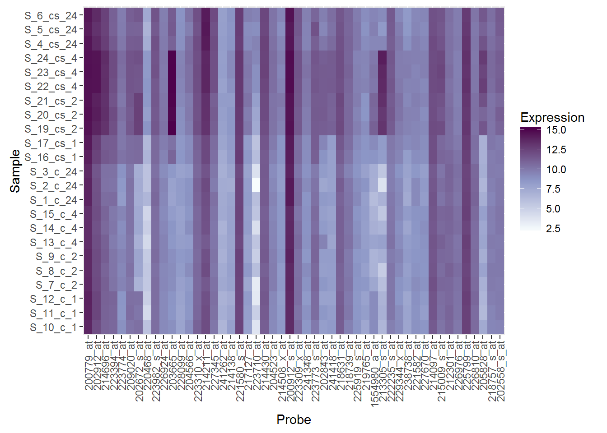
mean(dsHits50$adj.P.Val)## [1] 0.0005095663mean(dsHits50$adj.P.Val)*nrow(dsHits50) ## [1] 0.02547832tmDesMat <- model.matrix(~ time_num, NHBE_design)
data<-data[as.character(rownames(NHBE_design))]
all.equal(colnames(data),rownames(NHBE_design))## [1] TRUEtmFit <- lmFit(data, tmDesMat)
tmEbFit <- eBayes(tmFit)
#Look at hits
colnames(coef(tmEbFit))## [1] "(Intercept)" "time_num"topTable(tmEbFit)## logFC AveExpr t P.Value adj.P.Val B
## 202586_at -0.04321190 9.045753 -11.559699 5.595299e-11 1.272203e-06 15.28331
## 203201_at -0.04242793 10.057592 -10.121063 7.109181e-10 6.663751e-06 12.74567
## 227559_at -0.05501598 8.182478 -9.958972 9.609875e-10 6.663751e-06 12.44384
## 202769_at 0.04317888 12.095002 9.769107 1.373425e-09 6.663751e-06 12.08602
## 226775_at -0.03828553 8.647287 -9.734894 1.465398e-09 6.663751e-06 12.02105
## 213113_s_at -0.04650788 10.391574 -9.412004 2.721027e-09 1.031133e-05 11.40035
## 202770_s_at 0.03591883 11.510308 9.272069 3.572582e-09 1.160426e-05 11.12709
## 226226_at 0.04323136 9.561381 9.139895 4.630899e-09 1.316159e-05 10.86660
## 202887_s_at 0.04197944 13.601392 8.972788 6.449452e-09 1.629347e-05 10.53391
## 200810_s_at -0.03436033 11.350772 -8.828058 8.617559e-09 1.674623e-05 10.24274#Extract hits
dsHits2 <- topTable(tmEbFit,number=Inf,coef = grep("time_num", colnames(coef(tmEbFit))))length(which(dsHits2$P.Value<1e-3))## [1] 958length(which(dsHits2$adj.P.Val<0.05))## [1] 1451#Design matrix
allDesMat <- model.matrix(~ Treatment + time_num + Treatment * time_num, NHBE_design)
#Order and check
data<-data[as.character(rownames(NHBE_design))]
all.equal(colnames(data),rownames(NHBE_design))## [1] TRUE#Fit model
allFit <- lmFit(data, allDesMat)
allEbFit <- eBayes(allFit)#Look at hits
colnames(coef(allEbFit))## [1] "(Intercept)" "Treatmentcs" "time_num" "Treatmentcs:time_num"#Extract treatment hits
dsHitsTrt<-topTable(allEbFit, number=Inf, coef = 2, adjust.method = "BH")length(which(dsHitsTrt$P.Value<0.001))## [1] 621length(which(dsHitsTrt$adj.P.Val<0.05))## [1] 768#Number of shared hits
length(intersect(rownames(dsHitsTrt[which(dsHitsTrt$P.Value<0.001),]),rownames(dsHits[which(dsHits$P.Value<0.001),])))## [1] 328#Proportion of shared hits
length(rownames(dsHitsTrt[which(dsHitsTrt$P.Value<0.001),]))/length(rownames(dsHits[which(dsHits$P.Value<0.001),]))## [1] 0.7714286#Create hist objects with relative frequency so that the distributions can be compared better
h1<-hist(dsHitsTrt$P.Value,breaks=50, plot=F)
h1$counts <- h1$counts / sum(h1$counts)
h2<-hist(dsHits2$P.Value,breaks=50, plot=F)
h2$counts <- h2$counts / sum(h2$counts)
#Plot relative frequency histograms in 1x2 window
par(mfrow=c(1,2))
plot(h1,xlab="P.Value",main="Full model",ylim=c(0,0.15),ylab="Relative Frequency")
plot(h2,xlab="P.Value",main="Simple model",ylim=c(0,0.15),ylab="Relative Frequency")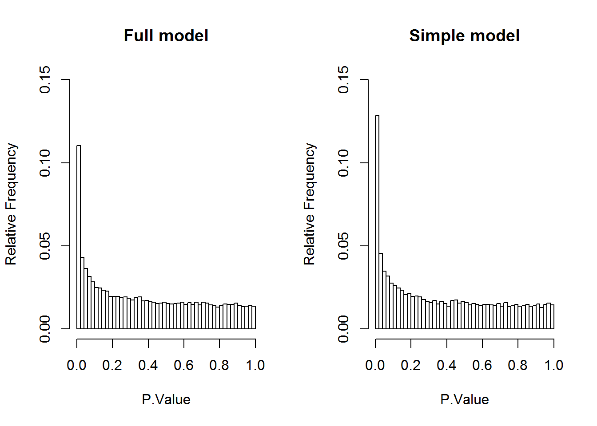
par(mfrow=c(1,1))#Check effects
colnames(coef(allEbFit))## [1] "(Intercept)" "Treatmentcs" "time_num" "Treatmentcs:time_num"#Extract hits
dsHitsInt<-topTable(allEbFit,number=Inf,coef = 4, sort.by = "p")length(which(dsHitsInt$P.Value<1e-3))## [1] 573length(which(dsHitsInt$adj.P.Val<0.05))## [1] 664#Extract top 3 and bottom 3 genes according to adj. p-value
dataInt<-data[which(rownames(data)%in%rownames(dsHitsInt[c(1,2,3,nrow(dsHitsInt)-2,nrow(dsHitsInt)-1,nrow(dsHitsInt)),])),]
#Convert to repeated observations format
dataInt2 <- data.frame(sample = rep(colnames(dataInt), each = nrow(dataInt)),
probe = rownames(dataInt),
expression = unlist(dataInt))
dataInt2$time<-NHBE_design[match(dataInt2$sample,NHBE_design$ExternalID),4]
dataInt2$treatment<-NHBE_design[match(dataInt2$sample,NHBE_design$ExternalID),2]
#Re-order factor levels for plotting
#Significant probes will be on the top!
dataInt2$probe<-factor(dataInt2$probe,levels=rownames(dsHitsInt[c(1,2,3,nrow(dsHitsInt)-2,nrow(dsHitsInt)-1,nrow(dsHitsInt)),]))#Plot the plot
ggplot(dataInt2, aes(x = time, y = expression)) +
geom_point(aes(color = treatment),position=position_jitter(width = 0.1)) +
geom_smooth(method = 'lm', se=F)+
facet_wrap(~ probe)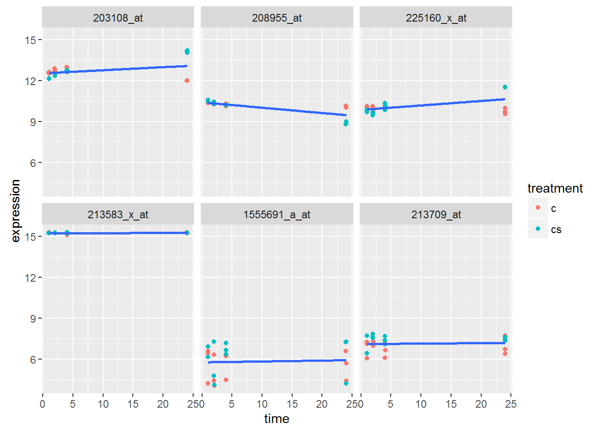
GSE37599.data <- read.delim("GSE37599-data.tsv", stringsAsFactors=FALSE)
rownames(GSE37599.data)<-GSE37599.data[,1]dim(GSE37599.data[,-1])## [1] 10928 6pairs(GSE37599.data[,-1])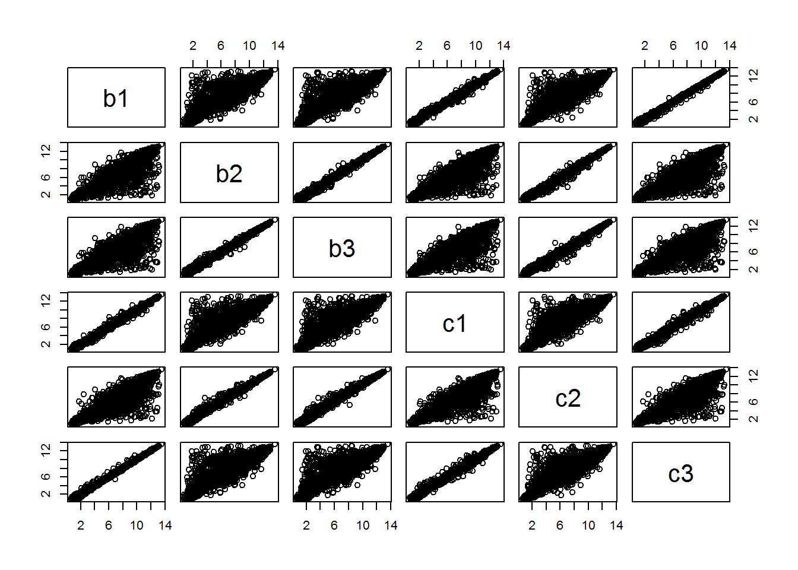
ggplot(melt(GSE37599.data[c(1:100),]), aes(x = variable, y = X, fill = value)) +
theme(axis.text.x = element_text(angle = 90, hjust = 1, vjust = 0.5)) +
geom_tile() +
theme(axis.text.y = element_blank()) +
theme(axis.ticks.y = element_blank()) +
labs(x="Sample",y="",title="First 100 Genes Heatmap") +
scale_fill_gradient2(low = jBuPuPalette[1],
mid = jBuPuPalette[paletteSize/2],
high = jBuPuPalette[paletteSize],
midpoint = (max(melt(GSE37599.data[c(1:100),])$value) +
min(melt(GSE37599.data[c(1:100),])$value)) / 2,
name = "Expression")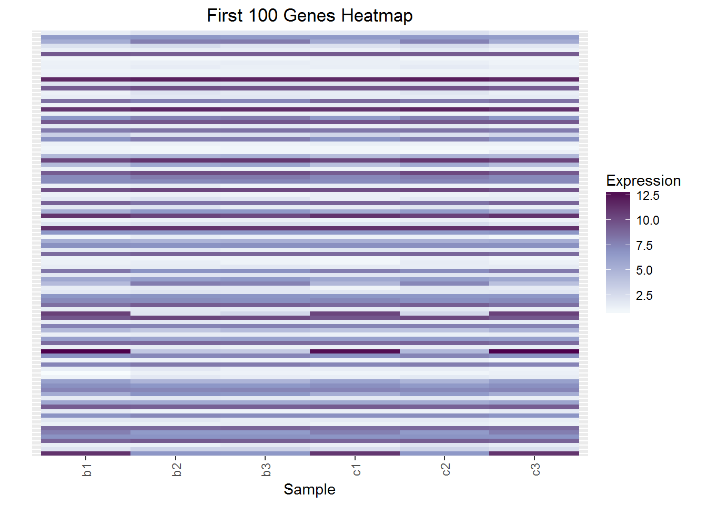
print(melt(cor(GSE37599.data[,-1])))## Var1 Var2 value
## 1 b1 b1 1.0000000
## 2 b2 b1 0.9624810
## 3 b3 b1 0.9620857
## 4 c1 b1 0.9983630
## 5 c2 b1 0.9678878
## 6 c3 b1 0.9988854
## 7 b1 b2 0.9624810
## 8 b2 b2 1.0000000
## 9 b3 b2 0.9980078
## 10 c1 b2 0.9657525
## 11 c2 b2 0.9977190
## 12 c3 b2 0.9629416
## 13 b1 b3 0.9620857
## 14 b2 b3 0.9980078
## 15 b3 b3 1.0000000
## 16 c1 b3 0.9648898
## 17 c2 b3 0.9973109
## 18 c3 b3 0.9628669
## 19 b1 c1 0.9983630
## 20 b2 c1 0.9657525
## 21 b3 c1 0.9648898
## 22 c1 c1 1.0000000
## 23 c2 c1 0.9707645
## 24 c3 c1 0.9978385
## 25 b1 c2 0.9678878
## 26 b2 c2 0.9977190
## 27 b3 c2 0.9973109
## 28 c1 c2 0.9707645
## 29 c2 c2 1.0000000
## 30 c3 c2 0.9685690
## 31 b1 c3 0.9988854
## 32 b2 c3 0.9629416
## 33 b3 c3 0.9628669
## 34 c1 c3 0.9978385
## 35 c2 c3 0.9685690
## 36 c3 c3 1.0000000ggplot(melt(cor(GSE37599.data[,-1])), aes(x=Var1,y=Var2, z= value)) +
geom_tile(aes(fill= value)) +
theme_bw() +
theme(axis.text.x = element_text(angle = 90, hjust = 1)) +
labs(x="",y="",title="Sample Correlations")+
scale_fill_gradient2(low = jBuPuPalette[1],
mid = jBuPuPalette[paletteSize/2],
high = jBuPuPalette[paletteSize],
midpoint = (max(melt(cor(GSE37599.data[,-1]))[3]) +
min(melt(cor(GSE37599.data[,-1]))[3])) / 2,
name = "Correlation")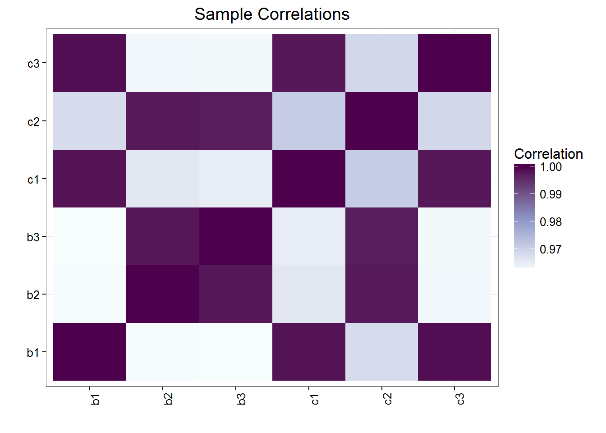
#Arrange and scale data
temp<-t(GSE37599.data[,-1])
temp<-scale(temp)
#PCA
temp.pca<-prcomp(temp)
#Plots first two PCs
plot(temp.pca$x[,c(1:2)],col=factor(rownames(temp.pca$x)),main="PC1 vs PC2", ylim=c(-40, 65))
text(temp.pca$x[,1], temp.pca$x[,2], labels=rownames(temp.pca$x), cex= 0.7, pos=3)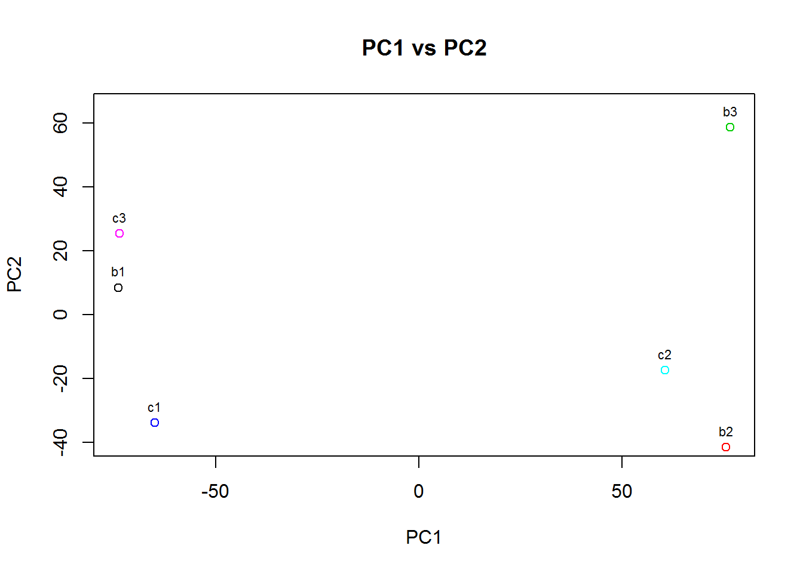
#Fix label swap
colnames(GSE37599.data)<-c("X","c2","b2","b3","c1","b1","c3")
#Reorder columns
GSE37599.data<-GSE37599.data[c("X","b1","b2","b3","c1","c2","c3")]#Create grouping variable
group <- factor(c(rep("1",3),rep("2",3)))
#Design matrix
design <- model.matrix(~group)
design## (Intercept) group2
## 1 1 0
## 2 1 0
## 3 1 0
## 4 1 1
## 5 1 1
## 6 1 1
## attr(,"assign")
## [1] 0 1
## attr(,"contrasts")
## attr(,"contrasts")$group
## [1] "contr.treatment"#Normalize expression with voom
norm.factor <- calcNormFactors(GSE37599.data[,-1])
dat.voomed <- voom(GSE37599.data[,-1],design,plot=TRUE,lib.size=colSums(GSE37599.data[,-1])*norm.factor)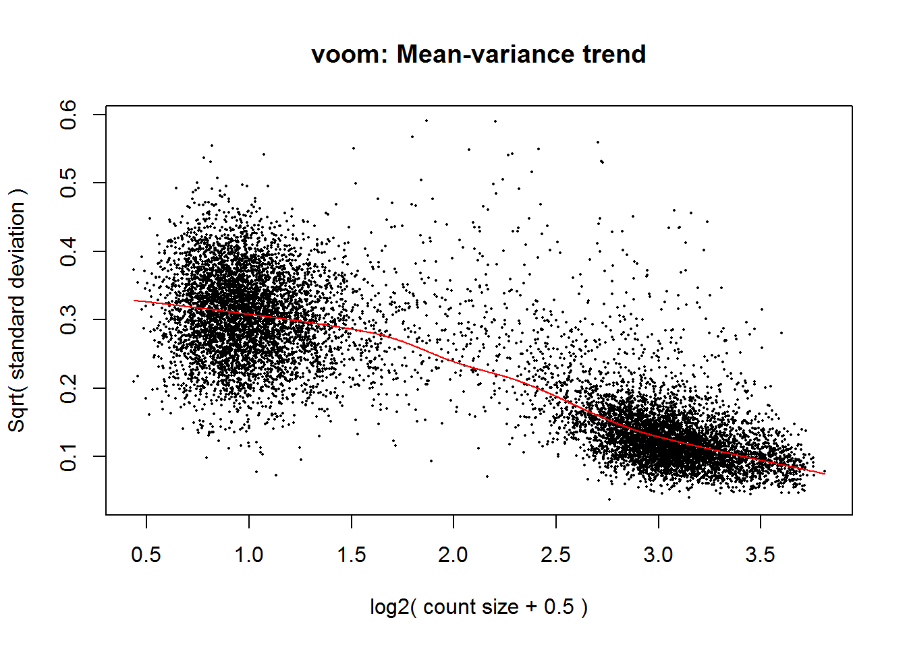
#Fit the model
fit <- lmFit(dat.voomed, design)
fit <- eBayes(fit)#Extract hits
exp.Res<-topTable(fit, number = Inf)
#Create packaged data frame
exp.Res<-data.frame(probe.id=as.character(rownames(exp.Res)),gene.id="NA",p.value=as.numeric(exp.Res$P.Value),q.value=as.numeric(exp.Res$adj.P.Val),log.fc=as.numeric(exp.Res$logFC),test.stat=as.numeric(exp.Res$t),stringsAsFactors = F)
#Check order of gene.id and probe.id data frames
all.equal(names(unlist(mget(exp.Res[,1], yeast2ORF))),exp.Res[,1])## [1] TRUE#Add gene IDs
exp.Res[,2]<-as.character(unlist(mget(exp.Res[,1], yeast2ORF)))
exp.Res<-as.data.frame(exp.Res)nrow(exp.Res)## [1] 10928exp.Res<-exp.Res[-c(which(is.na(exp.Res[,2]))),]
nrow(exp.Res)## [1] 5705#Order hits by q.value
exp.Res<-exp.Res[order(exp.Res$q.value),]
#Extract top hit
temp<-GSE37599.data[which(GSE37599.data[,1]%in%exp.Res[1,1]),]
#Long format data
temp<-melt(temp)
temp[,2]<-c(rep("batch",3),rep("chemo",3))
colnames(temp)<-c("Probe","Treatment","Expression")
#Plot
ggplot(temp, aes(x = Treatment, y = Expression)) +
geom_point(aes(color = Treatment),position=position_jitter(width = 0.1)) +
facet_wrap(~ Probe)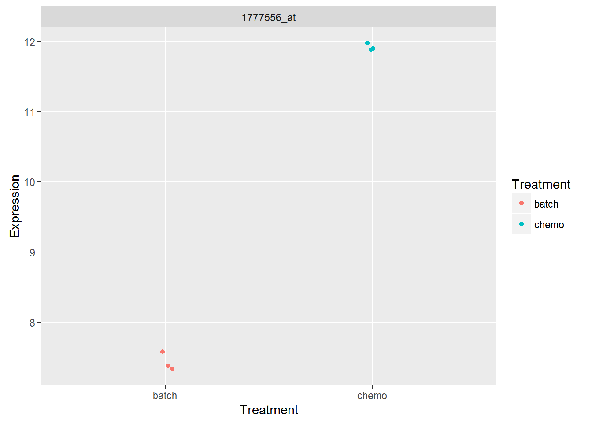
print(length(which(exp.Res$q.value<1e-5)))## [1] 1313write.table(exp.Res,"exp.Res.txt",col.names=T,row.names=F,quote=F,sep="\t",append=F)sty.counts <- read.delim("stampy.deep.counts.tsv", stringsAsFactors=FALSE)dim(sty.counts)## [1] 6542 7ggplot(melt(cor(sty.counts[,-1])), aes(x=Var1,y=Var2, z= value)) +
geom_tile(aes(fill= value)) +
theme_bw() +
theme(axis.text.x = element_text(angle = 90, hjust = 1)) +
labs(x="",y="",title="Sample Correlations")+
scale_fill_gradient2(low = jBuPuPalette[1],
mid = jBuPuPalette[paletteSize/2],
high = jBuPuPalette[paletteSize],
midpoint = (max(melt(cor(sty.counts[,-1]))[3]) +
min(melt(cor(sty.counts[,-1]))[3])) / 2,
name = "Pearson correlation")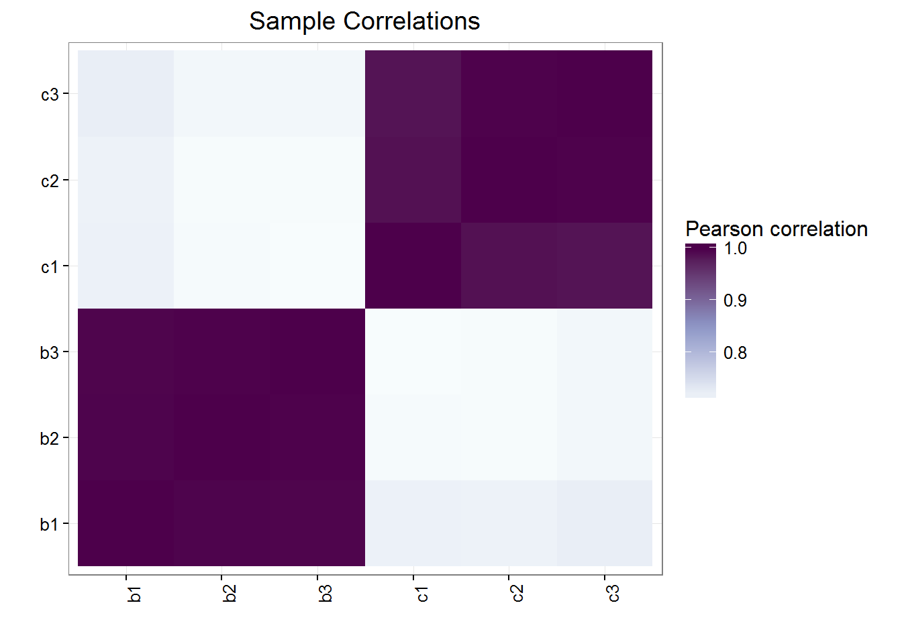 * Looks good
dge.glm <- DGEList(counts=sty.counts[,-1], group=group)
str(dge.glm)## Formal class 'DGEList' [package "edgeR"] with 1 slot
## ..@ .Data:List of 2
## .. ..$ : int [1:6542, 1:6] 11 40 31 63 112 17 0 4 5 0 ...
## .. .. ..- attr(*, "dimnames")=List of 2
## .. .. .. ..$ : chr [1:6542] "1" "2" "3" "4" ...
## .. .. .. ..$ : chr [1:6] "b1" "b2" "b3" "c1" ...
## .. ..$ :'data.frame': 6 obs. of 3 variables:
## .. .. ..$ group : Factor w/ 2 levels "1","2": 1 1 1 2 2 2
## .. .. ..$ lib.size : num [1:6] 3420851 4487585 3415378 2529571 2990956 ...
## .. .. ..$ norm.factors: num [1:6] 1 1 1 1 1 1dge.glm.com.disp <- estimateGLMCommonDisp(dge.glm,design, verbose=TRUE)## Disp = 0.00551 , BCV = 0.0742dge.glm.trend.disp <- estimateGLMTrendedDisp(dge.glm.com.disp, design)
dge.glm.tag.disp <- estimateGLMTagwiseDisp(dge.glm.trend.disp, design)
#plot the tagwise dispersion against log2-CPM (counts per million)
plotBCV(dge.glm.tag.disp)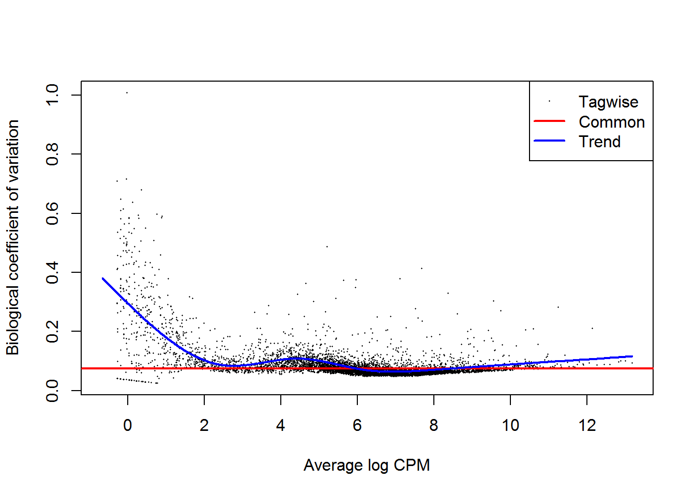
fit <- glmFit(dge.glm.tag.disp,design)
colnames(coef(fit))## [1] "(Intercept)" "group2"lrt <- glmLRT(fit,coef=2)
tt.glm <- topTags(lrt, n=Inf,sort.by = "none")nrow(tt.glm$table[tt.glm$table$FDR < 1e-5,])## [1] 2669exp.Res2<-data.frame(gene.id=sty.counts$X, p.value=tt.glm$table$PValue,q.value=tt.glm$table$FDR,log.fc= tt.glm$table$logFC,test.stat=tt.glm$table$LR,stringsAsFactors = F)write.table(exp.Res2,"exp.Res2.txt",col.names=T,row.names=F,quote=F,sep="\t",append=F)sty.low.counts <- read.delim("stampy.low.counts.tsv", stringsAsFactors=FALSE)dge.glm <- DGEList(counts=sty.low.counts[,-1], group=group)
dge.glm.com.disp <- estimateGLMCommonDisp(dge.glm,design, verbose=TRUE)## Disp = 0.0042 , BCV = 0.0648dge.glm.trend.disp <- estimateGLMTrendedDisp(dge.glm.com.disp, design)
dge.glm.tag.disp <- estimateGLMTagwiseDisp(dge.glm.trend.disp, design)
#plot the tagwise dispersion against log2-CPM (counts per million)
plotBCV(dge.glm.tag.disp)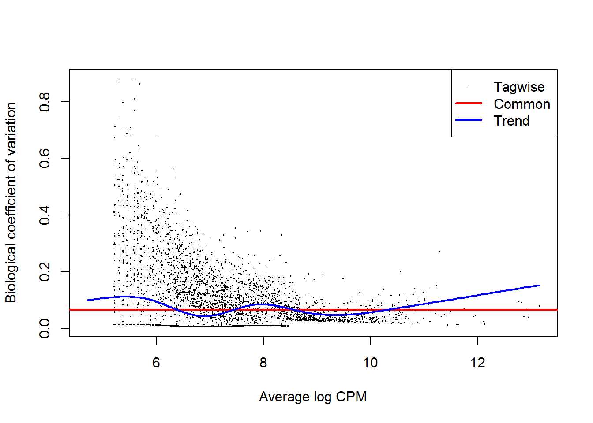
fit <- glmFit(dge.glm.tag.disp,design)
colnames(coef(fit))## [1] "(Intercept)" "group2"lrt <- glmLRT(fit,coef=2)
tt.glm <- topTags(lrt, n=Inf,sort.by = "none")nrow(tt.glm$table[tt.glm$table$FDR < 1e-5,])## [1] 486#Package results
edger.low.results<-data.frame(gene.id=sty.low.counts$X, p.value=tt.glm$table$PValue,q.value=tt.glm$table$FDR,log.fc= tt.glm$table$logFC,test.stat=tt.glm$table$LR,stringsAsFactors = F)
write.table(edger.low.results,"edger.low.results.txt",col.names=T,row.names=F,quote=F,sep="\t",append=F)#Extract relevant hits
temp1<-edger.low.results[edger.low.results$q.value<1e-5,]
temp2<-exp.Res2[exp.Res2$q.value<1e-5,]
#size of low read set
length(unique(temp1[,1]))## [1] 486#size of deep read set
length(unique(temp2[,1]))## [1] 2669#size of intersection set
length(intersect(temp1[,1],temp2[,1]))## [1] 485#plot Venn diagram
grid.newpage()
draw.pairwise.venn(486, 2669, 485, category = c("Low Read Depth", "High Read Depth"), lty = rep("blank",2), fill = c("light blue", "pink"), alpha = rep(0.5, 2), cat.pos = c(0,0), cat.dist = rep(0.025, 2))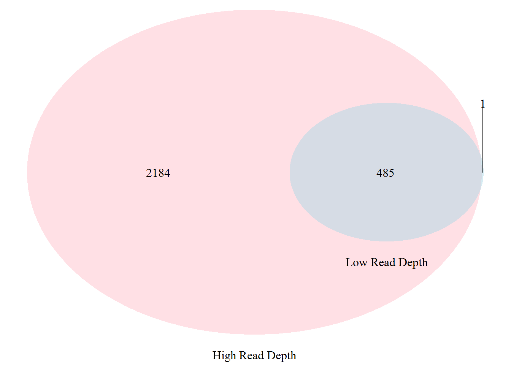
## (polygon[GRID.polygon.817], polygon[GRID.polygon.818], polygon[GRID.polygon.819], polygon[GRID.polygon.820], text[GRID.text.821], text[GRID.text.822], lines[GRID.lines.823], text[GRID.text.824], text[GRID.text.825], text[GRID.text.826])length(intersect(temp1[,1],temp2[,1]))## [1] 485length(unique(c(temp1[,1],temp2[,1])))## [1] 2670#First, identify genes required for plot
intersect(exp.Res[which(exp.Res[,4]<1e-5),2],exp.Res2[which(exp.Res2[,3]<1e-5),1])[c(1)]## [1] "YIL155C"setdiff(exp.Res[which(exp.Res[,4]<1e-5),2],exp.Res2[which(exp.Res2[,3]<1e-5),1])[c(2)]## [1] "YGL209W"setdiff(exp.Res2[which(exp.Res2[,3]<1e-5),1],exp.Res[which(exp.Res[,4]<1e-5),2])[c(15)]## [1] "YAL038W"exp.Res[which(exp.Res[,4]>1e-1),2][c(1)]## [1] "YHR083W"exp.Res2[which(exp.Res2[,3]>1e-2),1][c(50)]## [1] "YAL047C"#Extract genes of interest
temp1<-exp.Res[which(exp.Res$gene.id%in%c("YIL155C","YGL209W","YAL038W","YHR083W","YAL047C")),]
temp2<-GSE37599.data[which(GSE37599.data$X%in%temp1$probe.id),]
temp1<-temp1[order(temp1$probe.id),]
temp2<-temp2[order(temp2$X),]
all.equal(temp1$probe.id,temp2$X)## [1] TRUEtemp2$X<-temp1$gene.id
print(temp2)## X b1 b2 b3 c1 c2 c3
## 1770962_at YAL038W 12.947495 12.886726 12.863106 12.660910 12.830662 12.820493
## 1775999_at YHR083W 8.988651 9.161674 9.168342 8.744228 8.723073 8.633128
## 1776471_at YGL209W 7.328894 7.395340 7.367554 5.038703 5.112536 4.902519
## 1777556_at YIL155C 7.575720 7.329873 7.372745 11.899666 11.877211 11.969712
## 1778536_at YAL047C 5.930029 5.896662 5.889662 6.071035 5.957254 5.962386#Organize data into single data frame
temp2$type<-"MicroArray"
temp2<-temp2[order(temp2$X),]
#get expression level
temp3<-sty.counts[which(sty.counts$X%in%c("YIL155C","YGL209W","YAL038W","YHR083W","YAL047C")),]
print(temp3)## X b1 b2 b3 c1 c2 c3
## 81 YAL038W 8410 11962 9519 3005 4625 5575
## 92 YAL047C 130 196 143 124 135 184
## 2261 YGL209W 121 150 110 91 107 136
## 2782 YHR083W 348 419 330 239 222 324
## 3103 YIL155C 307 332 221 6238 6358 7551temp3$type<-"RNA-Seq"
temp3<-temp3[order(temp3$X),]
temp4<-rbind(temp2,temp3)
temp4$scenario<-as.character(rep(c(1:5),2))
#Long form data for ggplot
temp5<-melt(temp4)
temp5$variable<-c(rep("batch",30),rep("chemo",30))#Relabel and reorder factors into scenario 1-5
temp5$X<-factor(temp5$X,levels=c("YIL155C","YGL209W","YAL038W","YHR083W","YAL047C"),labels=c("DE Both","DE array","DE edgeR","Boring array","Boring edgeR"))
#Plot with 2 variable faceting
ggplot(temp5, aes(x = variable, y = value)) +
geom_point(aes(color = variable),position=position_jitter(width = 0.1)) +
facet_grid(type~X, scales="free")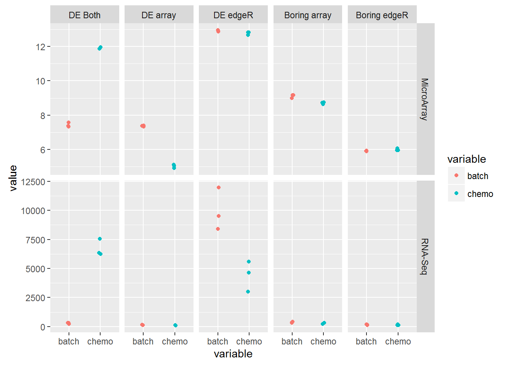
Comment on the potential presence of outliers (if any) based on the sample correlation matrices created in Q2a.